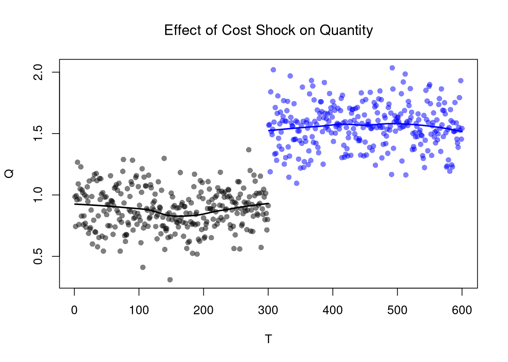
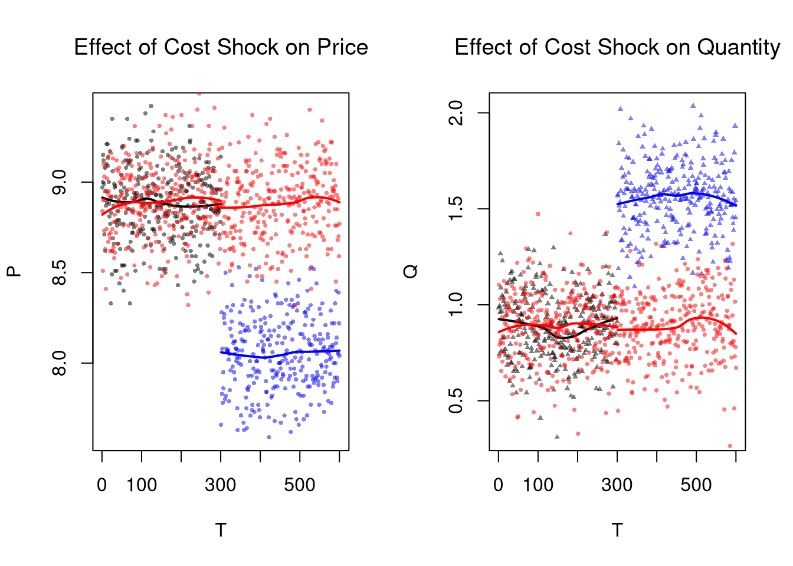

14 Experimental Data
14.1 Design Basics
Competitive Equilibrium Example.
If you have exogenous variation on one side of the market, you can get information on the other. For example, lower costs shift out supply (more is produced at given price), allowing you to trace out part of a demand curve.
To see this, consider an experiment where student subjects are recruited to a classroom and randomly assigned to be either buyers or sellers in a market for little red balls. In this case, the classroom environment allows the experimenter to control for various factors (e.g., the temperature of the room is constant for all subjects) and the explicit randomization of subjects means that there are not typically systematic differences in different groups of students.
In the experiment, sellers are given linear “cost functions” that theoretically yield individual supplies like \(\eqref{eqn:market_supply}\) and are paid “price - cost”. Buyers are given linear “benefit functions” that theoretically yield individual demands like \(\eqref{eqn:market_demand}\), and are paid “benefit - price”. The theoretical predictions are theorefore given in \(\eqref{eqn:market_supply}\). Moreover, experimental manipulation of \(A_{S}\) leads to \[\begin{eqnarray} \label{eqn:comp_market_statics} \frac{d P^{*}}{d A_{S}} = \frac{-1}{B_{D}+B_{S}}, \\ \frac{d Q^{*}}{d A_{S}} = \frac{B_{D}}{B_{D}+B_{S}}. \end{eqnarray}\] In this case, the supply shock has identified the demand slope: \(-B_{D}=d Q^{*}/d P^{*}\).
Code
# New Observations After Cost Change
EQ2 <- sapply(1:N, function(n){
demand <- qd_fun(P)
supply2 <- qs_fun(P, As=-6.5) # More Supplied at Given Price
eq <- eq_fun(demand, supply2, P)
return(eq)
# lines(supply2, P, col=rgb(0,0,1,.01))
#points(eq[2], eq[1], col=rgb(0,0,1,.05), pch=16)
})
dat2 <- data.frame(t(EQ2), cost='2', T=(1:N) + N)
dat2 <- rbind(dat1, dat2)
# Plot Simulated Market Data
cols <- ifelse(as.numeric(dat2$cost)==2, rgb(0,0,1,.2), rgb(0,0,0,.2))
plot.new()
plot.window(xlim=c(0,2), ylim=range(P))
points(dat2$Q, dat2$P, col=cols, pch=16)
axis(1)
axis(2)
mtext('Quantity',1, line=2)
mtext('Price',2, line=2)
If the function forms for supply and demand are different from what we predicted, we can still measure how much the experimental manipulation of production costs affects the equilibrium quantity sold (and compare that to what was predicted).7
14.2 Comparisons Over Time
Regression Discontinuities/Kinks.
The basic idea of RDD/RKD is to examine how a variable changes just before and just after a treatment. RDD estimates the difference in the levels of an outcome variable, whereas RKD estimates the difference in the slope. Turning to our canonical competitive market example, the RDD estimate is the difference between the lines at \(T=300\).
Code
# Locally Linear Regression
# (Compare means near break)
cols <- ifelse(as.numeric(dat2$cost)==2, rgb(0,0,1,.5), rgb(0,0,0,.5))
plot(P~T, dat2, main='Effect of Cost Shock on Price',
font.main=1, pch=16, col=cols)
regP1 <- loess(P~T, dat2[dat2$cost==1,])
x1 <- regP1$x
#lm(): x1 <- regP1$model$T
lines(x1, predict(regP1), col=rgb(0,0,0), lwd=2)
regP2 <- loess(P~T, dat2[dat2$cost==2,])
x2 <- regP2$x #regP1$model$T
lines(x2, predict(regP2), col=rgb(0,0,1), lwd=2)
Code

Code
| Dependent variable: | ||
| P | Q | |
| (1) | (2) | |
| T | -0.0001 | -0.00005 |
| (0.0001) | (0.0001) | |
| cost2 | -0.884*** | 0.650*** |
| (0.065) | (0.056) | |
| T:cost2 | 0.0002 | 0.0001 |
| (0.0002) | (0.0002) | |
| Constant | 8.898*** | 0.891*** |
| (0.023) | (0.020) | |
| Observations | 600 | 600 |
| R2 | 0.813 | 0.795 |
| Adjusted R2 | 0.812 | 0.794 |
| Residual Std. Error (df = 596) | 0.200 | 0.172 |
| F Statistic (df = 3; 596) | 862.854*** | 768.728*** |
| Note: | p<0.1; p<0.05; p<0.01 | |
Remember that this is effect is local: different magnitudes of the cost shock or different demand curves generally yield different estimates.
Moreover, note that more than just costs have changed over time: subjects in the later periods have history experience behind them while they do not in earlier periods. So hidden variables like “beliefs” are implicitly treated as well. This is one concrete reason to have an explicit control group.
Difference in Differences.
The basic idea of DID is to examine how a variable changes in response to an exogenous shock, compared to a control group.
Code
EQ3 <- sapply(1:(2*N), function(n){
# Market Mechanisms
demand <- qd_fun(P)
supply <- qs_fun(P)
# Compute EQ (what we observe)
eq_id <- which.min( abs(demand-supply) )
eq <- c(P=P[eq_id], Q=demand[eq_id])
# Return Equilibrium Observations
return(eq)
})
dat3 <- data.frame(t(EQ3), cost='1', T=1:ncol(EQ3))
dat3_pre <- dat3[dat3$T <= N ,]
dat3_post <- dat3[dat3$T > N ,]
# Plot Price Data
par(mfrow=c(1,2))
plot(P~T, dat2, main='Effect of Cost Shock on Price',
font.main=1, pch=16, col=cols, cex=.5)
lines(x1, predict(regP1), col=rgb(0,0,0), lwd=2)
lines(x2, predict(regP2), col=rgb(0,0,1), lwd=2)
# W/ Control group
points(P~T, dat3, pch=16, col=rgb(1,0,0,.5), cex=.5)
regP3a <- loess(P~T, dat3_pre)
x3a <- regP3a$x
lines(x3a, predict(regP3a), col=rgb(1,0,0), lwd=2)
regP3b <- loess(P~T, dat3_post)
x3b <- regP3b$x
lines(x3b, predict(regP3b), col=rgb(1,0,0), lwd=2)
# Plot Quantity Data
plot(Q~T, dat2, main='Effect of Cost Shock on Quantity',
font.main=1, pch=17, col=cols, cex=.5)
lines(x1, predict(regQ1), col=rgb(0,0,0), lwd=2)
lines(x2, predict(regQ2), col=rgb(0,0,1), lwd=2)
# W/ Control group
points(Q~T, dat3, pch=16, col=rgb(1,0,0,.5), cex=.5)
regQ3a <- loess(Q~T, dat3_pre)
lines(x3a, predict(regQ3a), col=rgb(1,0,0), lwd=2)
regQ3b <- loess(Q~T, dat3_post)
lines(x3b, predict(regQ3b), col=rgb(1,0,0), lwd=2)
Linear Regression Estimates
Code
# Pool Data
dat_pooled <- rbind(
cbind(dat2, EverTreated=1, PostPeriod=(dat2$T > N)),
cbind(dat3, EverTreated=0, PostPeriod=(dat3$T > N)))
dat_pooled$EverTreated <- as.factor(dat_pooled$EverTreated)
dat_pooled$PostPeriod <- as.factor(dat_pooled$PostPeriod)
# Estimate Level Shift for Different Groups after T=300
regP <- lm(P~PostPeriod*EverTreated, dat_pooled)
regQ <- lm(Q~PostPeriod*EverTreated, dat_pooled)
stargazer::stargazer(regP, regQ,
type='html',
title='Recipe DiD',
header=F)| Dependent variable: | ||
| P | Q | |
| (1) | (2) | |
| PostPeriod | -0.008 | 0.001 |
| (0.016) | (0.014) | |
| EverTreated1 | -0.011 | -0.007 |
| (0.016) | (0.014) | |
| PostPeriodTRUE:EverTreated1 | -0.822*** | 0.674*** |
| (0.023) | (0.020) | |
| Constant | 8.892*** | 0.891*** |
| (0.012) | (0.010) | |
| Observations | 1,200 | 1,200 |
| R2 | 0.767 | 0.735 |
| Adjusted R2 | 0.766 | 0.734 |
| Residual Std. Error (df = 1196) | 0.200 | 0.175 |
| F Statistic (df = 3; 1196) | 1,310.456*** | 1,103.303*** |
| Note: | p<0.1; p<0.05; p<0.01 | |
14.3 “Natural” Experiments
Natural experiments are historical case studies that remedy the endogeneity issues in observational data. They assume that a historical events is quasi (or psuedo) random. In addition to “RDD” and “DID” methods discussed above, instrumental variables are used in historical event studies. The elementary versions use linear regression, so I can cover them here using our competitive equilibrium example from before.
Two Stage Least Squares (2SLS).
Consider the market equilibrium example, which contains a cost shock. We can simply run another regression, but there will still be a problem.
Code
# Not exactly right, but at least right sign
reg2 <- lm(Q~P, data=dat2)
summary(reg2)
##
## Call:
## lm(formula = Q ~ P, data = dat2)
##
## Residuals:
## Min 1Q Median 3Q Max
## -0.76712 -0.16070 0.00393 0.15929 0.66060
##
## Coefficients:
## Estimate Std. Error t value Pr(>|t|)
## (Intercept) 6.69391 0.17588 38.06 <2e-16 ***
## P -0.64642 0.02074 -31.16 <2e-16 ***
## ---
## Signif. codes: 0 '***' 0.001 '**' 0.01 '*' 0.05 '.' 0.1 ' ' 1
##
## Residual standard error: 0.2339 on 598 degrees of freedom
## Multiple R-squared: 0.6189, Adjusted R-squared: 0.6182
## F-statistic: 971.1 on 1 and 598 DF, p-value: < 2.2e-16Within Group Variance
You can experiment with the effect of different variances on both OLS and IV in the code below. And note that if we had multiple supply shifts and recorded their magnitudes, then we could recover more information about demand, perhaps tracing it out entirely.
Code
# Examine
Egrid <- expand.grid(Ed_sigma=c(.001, .25, 1), Es_sigma=c(.001, .25, 1))
Egrid_regs <- lapply(1:nrow(Egrid), function(i){
Ed_sigma <- Egrid[i,1]
Es_sigma <- Egrid[i,2]
EQ1 <- sapply(1:N, function(n){
demand <- qd_fun(P, Ed_sigma=Ed_sigma)
supply <- qs_fun(P, Es_sigma=Es_sigma)
return(eq_fun(demand, supply, P))
})
EQ2 <- sapply(1:N, function(n){
demand <- qd_fun(P,Ed_sigma=Ed_sigma)
supply2 <- qs_fun(P, As=-6.5,Es_sigma=Es_sigma)
return(eq_fun(demand, supply2, P))
})
dat <- rbind(
data.frame(t(EQ1), cost='1'),
data.frame(t(EQ2), cost='2'))
return(dat)
})
Egrid_OLS <- sapply(Egrid_regs, function(dat) coef( lm(Q~P, data=dat)))
Egrid_IV <- sapply(Egrid_regs, function(dat) coef( feols(Q~1|P~cost, data=dat)))
#cbind(Egrid, coef_OLS=t(Egrid_OLS)[,2], coef_IV=t(Egrid_IV)[,2])
lapply( list(Egrid_OLS, Egrid_IV), function(ei){
Emat <- matrix(ei[2,],3,3)
rownames(Emat) <- paste0('Ed_sigma.',c(.001, .25, 1))
colnames(Emat) <- paste0('Es_sigma.',c(.001, .25, 1))
return( round(Emat,2))
})To overcome this issue, we can compute the change in the expected values \(d \mathbb{E}[Q^{*}] / d \mathbb{E}[P^{*}] =-B_{D}\). Empirically, this is estimated via the change in average value.
Code
We can also separately recover \(d \mathbb{E}[Q^{*}] / d \mathbb{E}[A_{S}]\) and \(d \mathbb{E}[P^{*}] / d \mathbb{E}[A_{S}]\) from separate regressions.8
Code
Alternatively, we can recover the same estimate using an 2SLS regression with two equations: \[\begin{eqnarray} P &=& \alpha_{1} + A_{S} \beta_{1} + \epsilon_{1} \\ Q &=& \alpha_{2} + \hat{P} \beta_{2} + \epsilon_{2}. \end{eqnarray}\] In the first regression, we estimate the average effect of the cost shock on prices. In the second equation, we estimate how the average effect of prices which are exogenous to demand affect quantity demanded. To see this, first substitute the equilibrium condition into the supply equation: \(Q_{D}=Q_{S}=A_{S}+B_{S} P + E_{S}\), lets us rewrite \(P\) as a function of \(Q_{D}\). This yields two theoretical equations \[\begin{eqnarray} \label{eqn:linear_supply_iv} P &=& -\frac{A_{S}}{{B_{S}}} + \frac{Q_{D}}{B_{S}} - \frac{E_{S}}{B_{S}} \\ \label{eqn:linear_demand_iv} Q_{D} &=& A_{D} + B_{D} P + E_{D}. \end{eqnarray}\]
Code
# Two Stage Least Squares Estimate
ols_1 <- lm(P~cost, data=dat2)
dat2_new <- cbind(dat2, Phat=predict(ols_1))
reg_2sls <- lm(Q~Phat, data=dat2_new)
summary(reg_2sls)
##
## Call:
## lm(formula = Q ~ Phat, data = dat2_new)
##
## Residuals:
## Min 1Q Median 3Q Max
## -0.57417 -0.11551 0.00219 0.11010 0.48352
##
## Coefficients:
## Estimate Std. Error t value Pr(>|t|)
## (Intercept) 8.1005 0.1432 56.56 <2e-16 ***
## Phat -0.8126 0.0169 -48.09 <2e-16 ***
## ---
## Signif. codes: 0 '***' 0.001 '**' 0.01 '*' 0.05 '.' 0.1 ' ' 1
##
## Residual standard error: 0.1717 on 598 degrees of freedom
## Multiple R-squared: 0.7945, Adjusted R-squared: 0.7942
## F-statistic: 2313 on 1 and 598 DF, p-value: < 2.2e-16
# One Stage Instrumental Variables Estimate
library(fixest)
reg2_iv <- feols(Q~1|P~cost, data=dat2)
summary(reg2_iv)
## TSLS estimation - Dep. Var.: Q
## Endo. : P
## Instr. : cost
## Second stage: Dep. Var.: Q
## Observations: 600
## Standard-errors: IID
## Estimate Std. Error t value Pr(>|t|)
## (Intercept) 8.100495 0.205264 39.4637 < 2.2e-16 ***
## fit_P -0.812563 0.024216 -33.5546 < 2.2e-16 ***
## ---
## Signif. codes: 0 '***' 0.001 '**' 0.01 '*' 0.05 '.' 0.1 ' ' 1
## RMSE: 0.245726 Adj. R2: 0.577291
## F-test (1st stage), P: stat = 2,591.5, p < 2.2e-16, on 1 and 598 DoF.
## Wu-Hausman: stat = 518.6, p < 2.2e-16, on 1 and 597 DoF.Caveats.
2SLS regression analysis can be very insightful, but I also want to stress some caveats about their practical application.
We always get coefficients back when running feols, and sometimes the computed p-values are very small. The interpretation of those numbers rests on many assumptions:
- Instrument exogeneity (Exclusion Restriction): The instrument must affect outcomes only through the treatment variable (e.g., only supply is affected directly, not demand).
- Instrument relevance: The instrument must be strongly correlated with the endogenous regressor, implying the shock creates meaningful variation.
- Functional form correctness: Supply and demand are assumed linear and additively separable.
- Multiple hypothesis testing risks: We were not repeatedly testing different instruments, which can artificially produce significant findings by chance.
We are rarely sure that all of these assumptions hold, and this is one reason why researchers often also report their OLS results. But that is insufficient, as spatial and temporal dependence also complicate inference:
- Exclusion restriction violations: Spatial or temporal spillovers may cause instruments to affect the outcome through unintended channels, undermining instrument exogeneity.
- Weak instruments: Spatial clustering, serial correlation, or network interdependencies can reduce instrument variation, causing weak instruments.
- Inference and standard errors: Spatial or temporal interdependence reduces the effective sample size, making conventional standard errors misleadingly small.
14.4 Further Reading
You are directed to the following resources which discusses endogeneity in more detail and how it applies generally.
- Causal Inference for Statistics, Social, and Biomedical Sciences: An Introduction
- https://www.mostlyharmlesseconometrics.com/
- https://www.econometrics-with-r.org
- https://bookdown.org/paul/applied-causal-analysis/
- https://mixtape.scunning.com/
- https://theeffectbook.net/
- https://www.r-causal.org/
- https://matheusfacure.github.io/python-causality-handbook/landing-page.html
For RDD and DID methods in natural experiments, see
- https://bookdown.org/paul/applied-causal-analysis/rdd-regression-discontinuity-design.html
- https://mixtape.scunning.com/06-regression_discontinuity
- https://theeffectbook.net/ch-RegressionDiscontinuity.html
- https://mixtape.scunning.com/09-difference_in_differences
- https://theeffectbook.net/ch-DifferenceinDifference.html
- http://www.urfie.net/read/index.html#page/226
For IV methods in natural experiments, see
- https://cameron.econ.ucdavis.edu/e240a/ch04iv.pdf
- https://mru.org/courses/mastering-econometrics/introduction-instrumental-variables-part-one
- https://www.econometrics-with-r.org/12-ivr.html
- https://bookdown.org/paul/applied-causal-analysis/estimation-2.html
- https://mixtape.scunning.com/07-instrumental_variables
- https://theeffectbook.net/ch-InstrumentalVariables.html
- http://www.urfie.net/read/index.html#page/247
Notice that even in this linear model, however, all effects are conditional: The effect of a cost change on quantity or price depends on the demand curve. A change in costs affects quantity supplied but not quantity demanded (which then affects equilibrium price) but the demand side of the market still matters! The change in price from a change in costs depends on the elasticity of demand.↩︎
Mathematically, we can also do this in a single step by exploiting linear algebra: \(\frac{\frac{ Cov(Q^{*},A_{S})}{ V(A_{S}) } }{\frac{ Cov(P^{*},A_{S})}{ V(A_{S}) }} &=& \frac{Cov(Q^{*},A_{S} )}{ Cov(P^{*},A_{S})}.\)↩︎